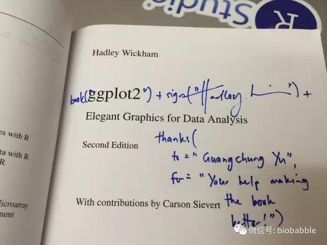
ggplot2出第二版我被hadley wickham致谢了，并且他给我寄来了签名书。很多人想问我怎么学画图，我只有一个秘籍，那就是勤加练习。我时常问自己，这个图我能不能画出来？若干年前，翻阅了一个简单的入门书，我就把里面所有的图片自己画了一遍，也就是本文了，虽然都比较简单，做为入门练习正正好，简单的图画多了，才有可能画复杂的图。复杂的图画多了，才有可能有所突破。
比如ggplot2中aes映射是不会作用于axis text的，theme也不能用aes映射，我就写了个函数，可以用选定变量给axis text上色并自动加入图例：
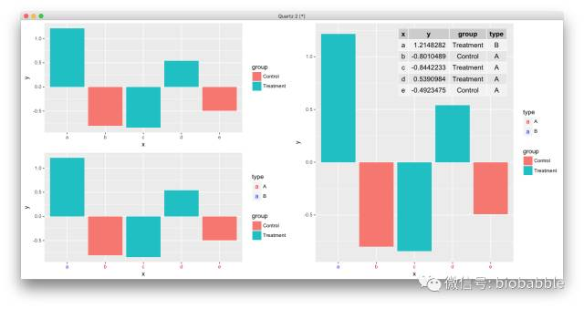
道理你都懂，学习无非是从简单入手，刻意练习，大量刻意的练习，走学术这条路，画图是躲不过的，不要再欺骗自己说Prism够用，ggplot2必须要搞起来，小白可以从点鼠标开始，请参考：
最后代码搞起来，而最好的学习资料莫过于作者的书，当然中文资料相对滞后。而进阶装逼，当然要持续关注本公众号。
1.16 Creating a Scatter Plot
plot(cars)
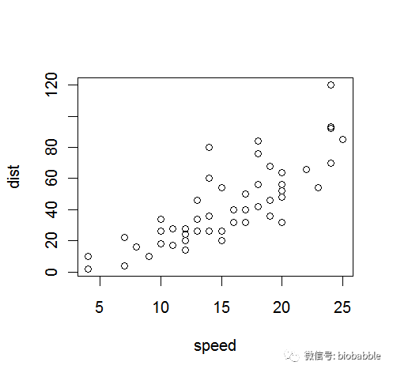
ggplot(cars,aes(speed,dist))+geom_point()
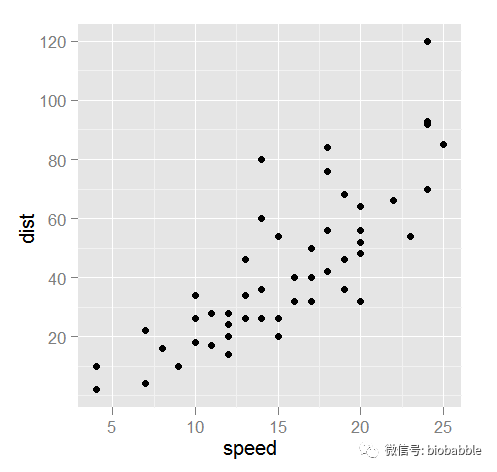
1.17 Creating a Bar Chart
heights <- tapply(airquality$Temp, airquality$Month, mean) par(mfrow=c(1,2))
barplot(heights)
barplot(heights,
main="Mean Temp. by Month",
names.arg=c("May", "Jun", "Jul", "Aug", "Sep"),
ylab="Temp (deg. F)")
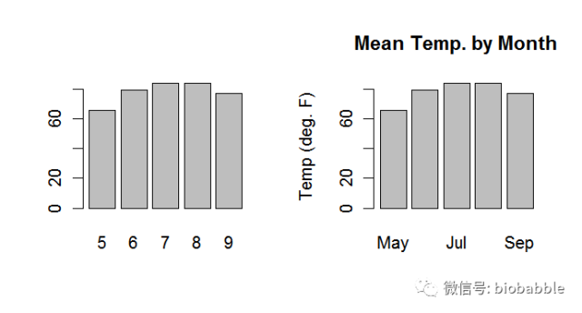
require(gridExtra)
heights=ddply(airquality,.(Month), mean)
heights$Month=as.character(heights$Month)
p1 <- ggplot(heights, aes(x=Month,weight=Temp))+ geom_bar()
p2 <- ggplot(heights, aes(x=factor(Month,
labels=c("May", "Jun", "Jul", "Aug", "Sep")),
weight=Temp))+
geom_bar()+
ggtitle("Mean Temp. By Month") +
xlab("") + ylab("Temp (deg. F)")
grid.arrange(p1,p2, ncol=2)
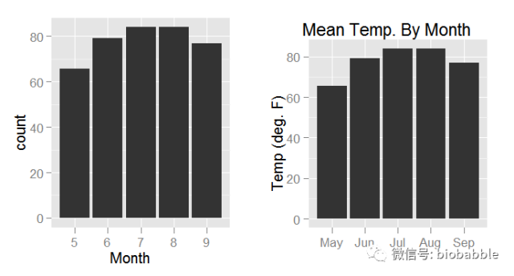
1.18 Creating a Box Plot
y <- c(-5, rnorm(100), 5)boxplot(y)
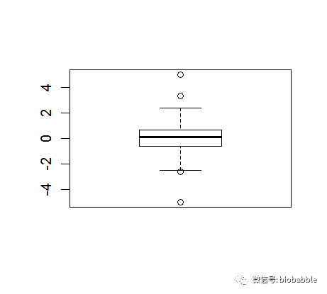
ggplot()+geom_boxplot(aes(x=factor(1),y=y))+xlab("")+ylab("")
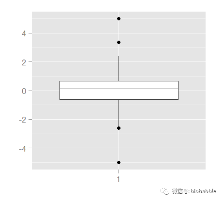
1.19 Creating a Histogram
data(Cars93, package="MASS")
par(mfrow=c(1,2))
hist(Cars93$MPG.city)
hist(Cars93$MPG.city, 20)
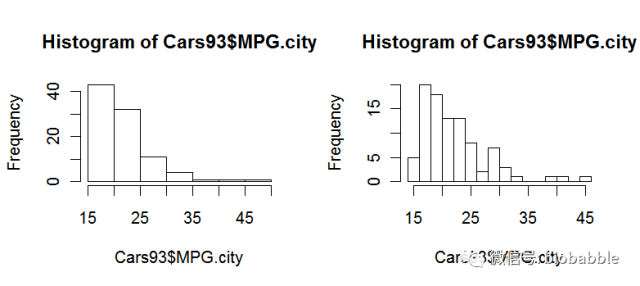
p <- ggplot(Cars93, aes(MPG.city))
p1 <- p + geom_histogram(binwidth=diff(range(Cars93$MPG.city))/5)
p2 <- p + geom_histogram(binwidth=diff(range(Cars93$MPG.city))/20)
grid.arrange(p1,p2, ncol=2)
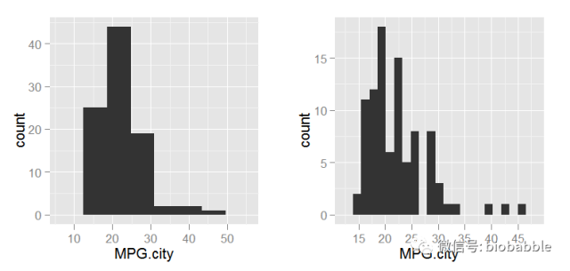
1.23 Diagnosing a Linear Regression
data(iris)
m = lm( Sepal.Length ~ Sepal.Width, data=iris)
par(mfrow=c(2,2))
plot(m)
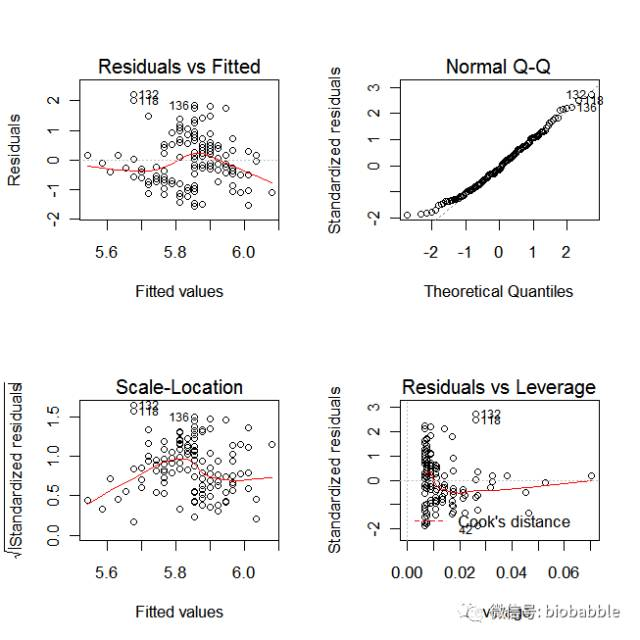
r <- residuals(m)
yh <- predict(m)
scatterplot <- function(x,y,
title="",
xlab="",
ylab="") {
d <- data.frame(x=x,y=y)
p <- ggplot(d, aes(x=x,y=y)) +
geom_point() +
ggtitle(title) +
xlab(xlab) +
ylab(ylab)
return(p)
}
p1 <- scatterplot(yh,r,
title="Residuals vs Fitted",
xlab="Fitted values",
ylab="Residuals")
p1 <- p1 +geom_hline(yintercept=0)+geom_smooth()
s <- sqrt(deviance(m)/df.residual(m))
hii <- lm.influence(m, do.coef = FALSE)$hat
rs <- r/(s * sqrt(1 - hii))
qqplot <- function(y,
distribution=qnorm,
title="Normal Q-Q",
xlab="Theretical Quantiles",
ylab="Sample Quantiles") {
require(ggplot2)
x <- distribution(ppoints(y))
d <- data.frame(x=x, y=sort(y))
p <- ggplot(d, aes(x=x, y=y)) +
geom_point() +
geom_line(aes(x=x, y=x)) +
ggtitle(label=title) +
xlab(xlab) +
ylab(ylab)
return(p)
}
p2 <- qqplot(rs, ylab="Standardized residuals")
sqrt.rs <- sqrt(abs(rs))
p3 <- scatterplot(yh,sqrt.rs,
title="Scale-Location",
xlab="Fitted values",
ylab=expression(sqrt("Standardized residuals")))
p3 <- p3 + geom_smooth()
cd <- cooks.distance(m)
p <- m$rank
y4_lim <- extendrange(rs, f=0.08)
x4_max <- max(hii) * 1.05
cook_levels <- c(0.5, 1)
cook_y <- sqrt(cook_levels * p * (1 - x4_max) / x4_max)
if (all(cook_y > y4_lim[2])) {
cook_levels <- pretty(c(0, max(cd)), n=3)
cook_levels <- cook_levels[cook_levels > 0]
}
h_seq <- seq(max(min(hii[hii > 0]), 1e-4), x4_max, length.out=200)
cook_curve <- expand.grid(h=h_seq, level=cook_levels)
cook_curve$rs <- sqrt(cook_curve$level * p * (1 - cook_curve$h) / cook_curve$h)
cook_curve$side <- "upper"
cook_curve2 <- cook_curve
cook_curve2$rs <- -cook_curve2$rs
cook_curve2$side <- "lower"
cook_curve <- rbind(cook_curve, cook_curve2)
cook_curve <- subset(cook_curve, rs >= y4_lim[1] & rs <= y4_lim[2])
cook_label_df <- data.frame(level=cook_levels)
cook_label_df$h <- x4_max
cook_label_df$rs <- sqrt(cook_label_df$level * p * (1 - x4_max) / x4_max)
cook_label_df$label <- paste0("Cook's distance = ", cook_label_df$level)
cook_label_df <- subset(cook_label_df, rs >= y4_lim[1] & rs <= y4_lim[2])
legend_df <- data.frame(
x=min(hii) + diff(range(hii)) * 0.08,
y=y4_lim[1] + diff(y4_lim) * 0.10,
label="Cook's distance"
)
top_id <- order(cd, decreasing=TRUE)[1:3]
point_label <- data.frame(hii=hii[top_id], rs=rs[top_id], label=top_id)
p4 <- scatterplot(hii,rs,
title="Residuals vs Leverage",
xlab="Leverage",
ylab="Standardized residuals")
p4 <- p4+
geom_hline(yintercept=0)+
geom_smooth(se=FALSE) +
geom_line(data=cook_curve,
aes(x=h, y=rs, group=interaction(level, side)),
inherit.aes=FALSE, linetype=2, colour="red") +
geom_text(data=legend_df,
aes(x=x, y=y, label=label),
inherit.aes=FALSE, hjust=0, size=3, colour="red") +
geom_text(data=cook_label_df,
aes(x=h, y=rs, label=label),
inherit.aes=FALSE, hjust=-0.02, size=3, colour="red") +
geom_text(data=point_label,
aes(x=hii, y=rs, label=label),
inherit.aes=FALSE, vjust=-0.6, size=3) +
coord_cartesian(xlim=c(min(hii), x4_max * 1.08), ylim=y4_lim)
grid.arrange(p1,p2,p3,p4, ncol=2)
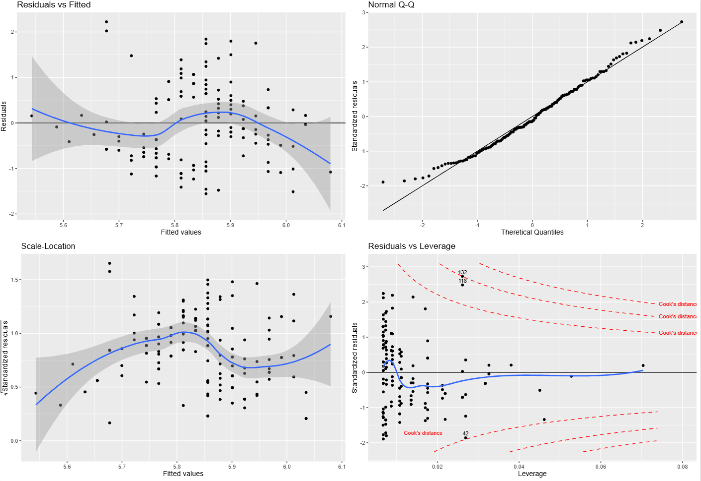
补充说明：Cook’s distance 到底是怎么算的，为什么在 plot(m) 里经常看不到？
Cook's distance 用来衡量：删掉某一个观测点之后，整个回归拟合会被改变多少。 这个量不是单纯看残差大不大，而是同时把两件事合在一起考虑：
- 这个点的残差是不是大；
- 这个点的 leverage（杠杆值，
hii）是不是高。
对于线性模型，可以直接让 R 计算：
cooks.distance(m)如果写成常见的公式形式，可以理解为：
其中：
D_i是第i个点的 Cook’s distance；r_i*是标准化残差；hii是第i个点的 leverage；p是模型参数个数。
所以 Cook's distance 大，往往意味着这个点既“偏”，又“能带节奏”。残差大但 leverage 很小，不一定有多大影响；leverage 很高但残差很小，也不一定真把模型拽歪。真正麻烦的是这两件事叠在一起。
Residuals vs Leverage 这张图里，红色虚线并不是每个点自己的 Cook's distance 数值，而是某几个固定水平的等值线。如果把纵轴写成标准化残差 r_i*，横轴写成 leverage hii，那么固定某个 Cook's distance = D 时，对应的轮廓线就是：
这就是为什么图里画出来的是一条弯曲的边界线，而不是把 Cook's distance 直接当成 y 轴来画。
这里还有一个很容易让人困惑的点：在 base R 的 plot(m) 里，很多时候你根本看不到 Cook’s distance 参考线。 这通常不是因为没算，而是因为默认参考水平太高。plot.lm() 默认使用的是：
cook.levels = c(0.5, 1)但像这里的 iris 这个简单线性模型，实际算出来最大的 Cook’s distance 只有大约 0.10。换句话说，0.5 和 1 这两条等值线离当前点云太远，落在图窗之外了。于是你看到的效果就是：
- base 图里好像没有 Cook’s distance；
- ggplot2 图里如果强行按
0.5和1画全，会把 y 轴拉得很大，点反而被压扁； - 如果按照
plot.lm()的思路固定残差图自己的坐标范围，再叠加 Cook 轮廓线，那么这些线就会因为超出图窗而“看不到”。
所以这里真正发生的事情是：Cook’s distance 已经参与了图形构造，但默认阈值对这组数据来说太高，以至于视觉上不可见。